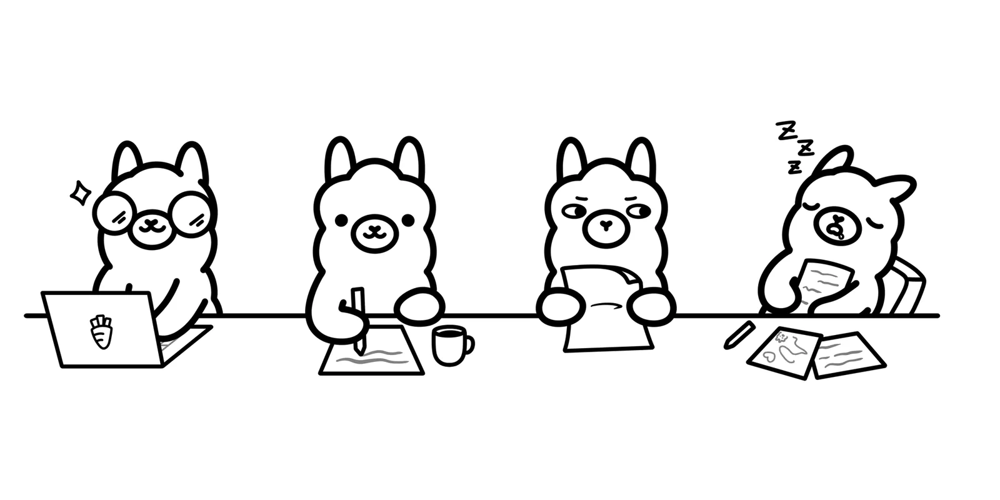
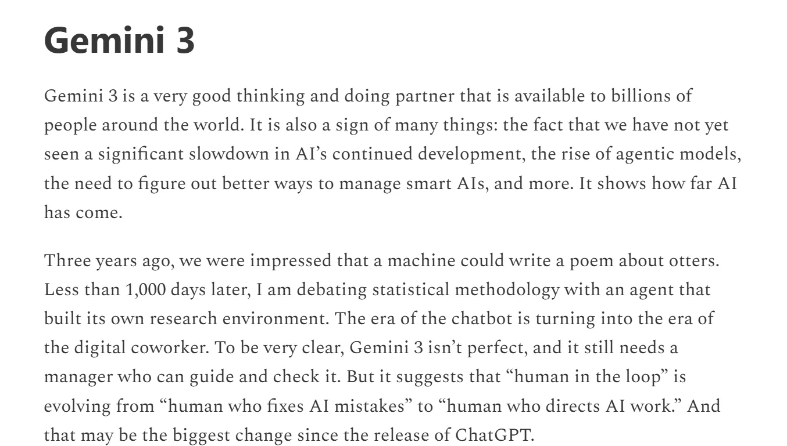
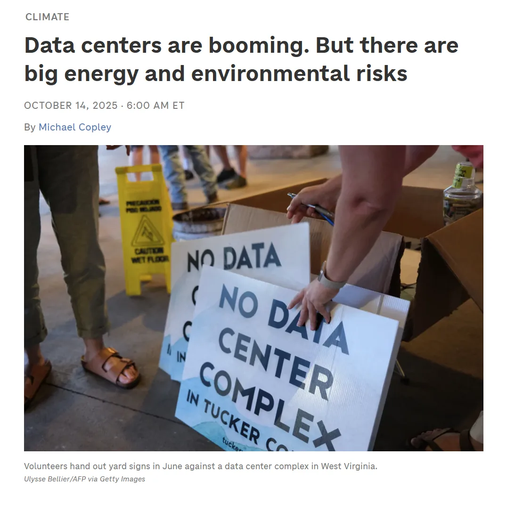
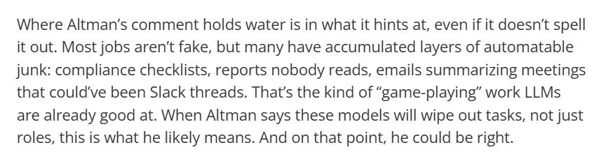
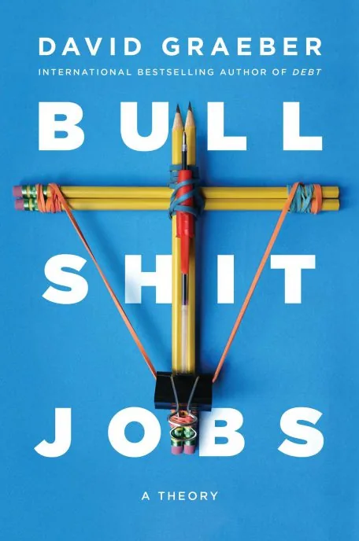
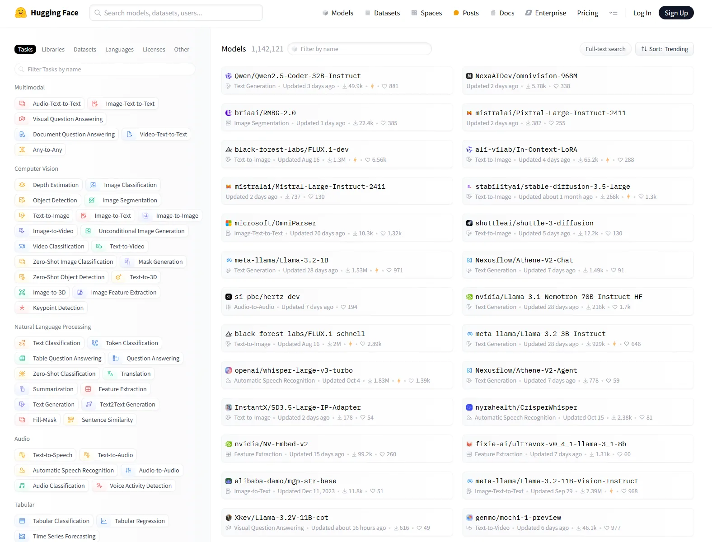

Workshop 6
Agentic Futures, Curricular Sustainability
Tuesday, July 22, 2026 · 10 AM – noon · CHDR · last in-person session
Framing
A tour, not a tutorial
We look at what is just beyond Code Web — Cowork, the Claude CLI, MCP, the Superpowers workflow — so you leave with a map. The hands-on portion is a writing exercise.
What is an agent?
- Tool use: the model can call functions you give it (search, file edit, run command).
- Planning: the model decides what to do next, in what order.
- Subagents: the model can spawn helper instances of itself.
- An agent is the loop these compose into. The vocabulary is doing a lot of work.

Part 2
Cowork tour
Live walkthrough of a Cowork session — Claude working alongside you in real time on a shared problem. We use one of your W7 or W9 artifacts as the working surface.
Live demo
Cowork on your ePortfolio or playful tool
What changes when the conversation is collaborative rather than turn-taking. Bring a question that's been nagging at your site.
Part 3
Claude CLI tour
Claude in the terminal. Slash commands, /init, /plan, CLAUDE.md for context engineering, the Superpowers workflow.
Live demo
Claude CLI on a small humanities project
Brainstorm → Spec → Plan → Implementation → Review. You watch. You don't install.
Superpowers as a discipline
- Brainstorm: explore intent before any code.
- Spec: write the design as a checked-in artifact.
- Plan: decompose into reviewable steps.
- Implementation: test-driven, gated by review checkpoints.
- Review: verification before completion claims.

Part 4
MCP, briefly
Model Context Protocol — 'USB-C for AI.' One example: connecting Claude to a Zotero library so research and writing share a context.
Why MCP matters for the next academic year
- Connect Claude to a tool you already use (Zotero, Google Drive, your library catalog).
- Now your AI workflow shares the same context as your research.
- Each MCP integration is a humanities choice: which of your tools deserves to be in the loop?

Reality check
Revisiting text — and labor
Before we write a CLAUDE.md, the labor question. The Underwood essay you read frames it; this is the practitioner's version.
Altman: 'jobs that aren't real work'
- tomshardware.com: the CEO's framing of which jobs disappear.
- Whose work is 'not real'? Look at the verbs.
- Most of what humanists do is on his list.


The point of bullshit jobs isn't that the work is hard or the workers are lazy. It's that the work is meaningless, and the worker knows it. AI is being marketed as the cure. It is at least as likely to be a more efficient producer.
— Echoing David Graeber's I Had to Guard an Empty Room
Part 5
Write your CLAUDE.md
A context file an agent could read to understand your work. Whether or not you ever install the CLI, this document is a deliverable in its own right.
Exercise
Your CLAUDE.md in 30 minutes
Cover at minimum:
- Who you are and what you do. One paragraph.
- Your domain. Disciplines, methods, topics, key conversations.
- Your typical workflows. What you tend to ask AI for; what you do not want it to do.
- Your preferences. Citation style, voice, audience defaults.
- Your boundaries. What you will not delegate. What requires your hand.
The most important sentence in any conversation about agentic AI is: what would I have to give up to use this? The answer is rarely zero.
— Pedagogical note for Workshop 6
Closing thoughts from the source class
- We started in May with ELIZA. We end in July with
CLAUDE.md. - The through-line: refuse to gesture vaguely. Name the labor. Name the choice.
- Take what is useful. Stay skeptical of the rest.
Part 6
Open Q&A
Last in-person session of the series. Bring whatever questions you haven't had a chance to ask — about agentic tools, your CLAUDE.md, or what to carry into the fall.
What comes next (Week 12, async)
- Sustaining and Sharing. Reflect, share-back to the public community.
- Optional: try the CLI or Cowork on your own.
- Materials stay open after the series ends — bring them into your fall syllabus.

Carry it into the fall
You leave with: a Claude Project, an Artifact, a deployed Pages site, a playful tool, an AI policy, and a CLAUDE.md. That's a curriculum, not a tour.